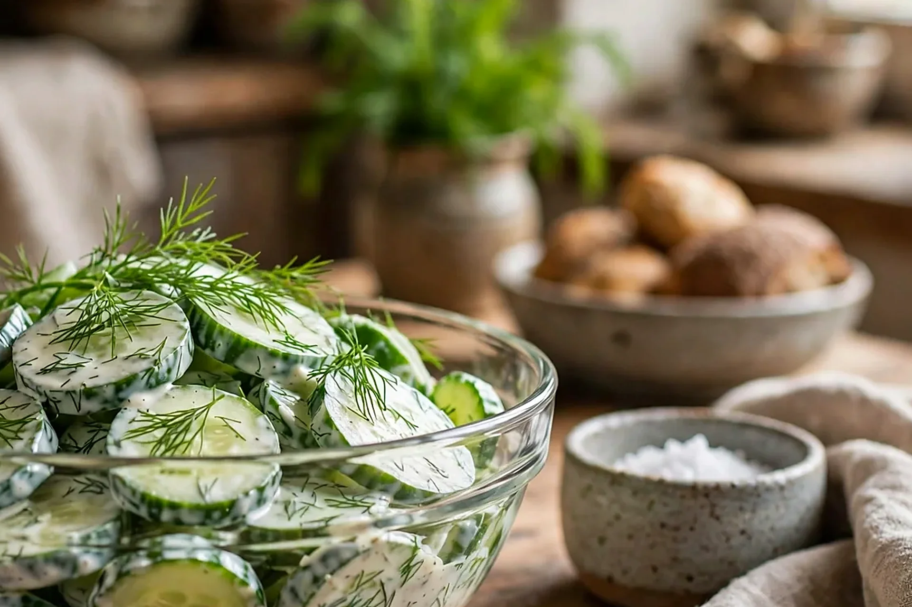

Gurkensalat (Cucumber Salad with Dill Dressing)
A good cucumber salad is the freshest side dish of all – crisp, creamy and full of dill. The dressing stirs together in two minutes, and after a short marinating time it tastes just like it did at Grandma's Sunday table.

Contents
Ingredients
Instructions
- Wash the cucumbers, peel them partially if you like, and slice them very thinly with a slicer or knife.
- Toss the slices with the salt and let them stand for about 20 minutes so they release their water. Drain off the liquid and squeeze the cucumbers lightly.
- Whisk the sour cream with the vinegar, sugar and pepper into a creamy dressing. Stir in the dill and the onion, if using.
- Fold the cucumber slices into the dressing.
- Let the salad marinate for about 10 more minutes, taste and adjust the seasoning, then serve.

Tip
Salting first is the most important step: without it, the cucumber water thins out the dressing. For a lighter version, replace half of the sour cream with yogurt.
📌 Find more recipe ideas on our Pinterest profile:
Lecker Rezepte on Pinterest
Lecker Rezepte on Pinterest